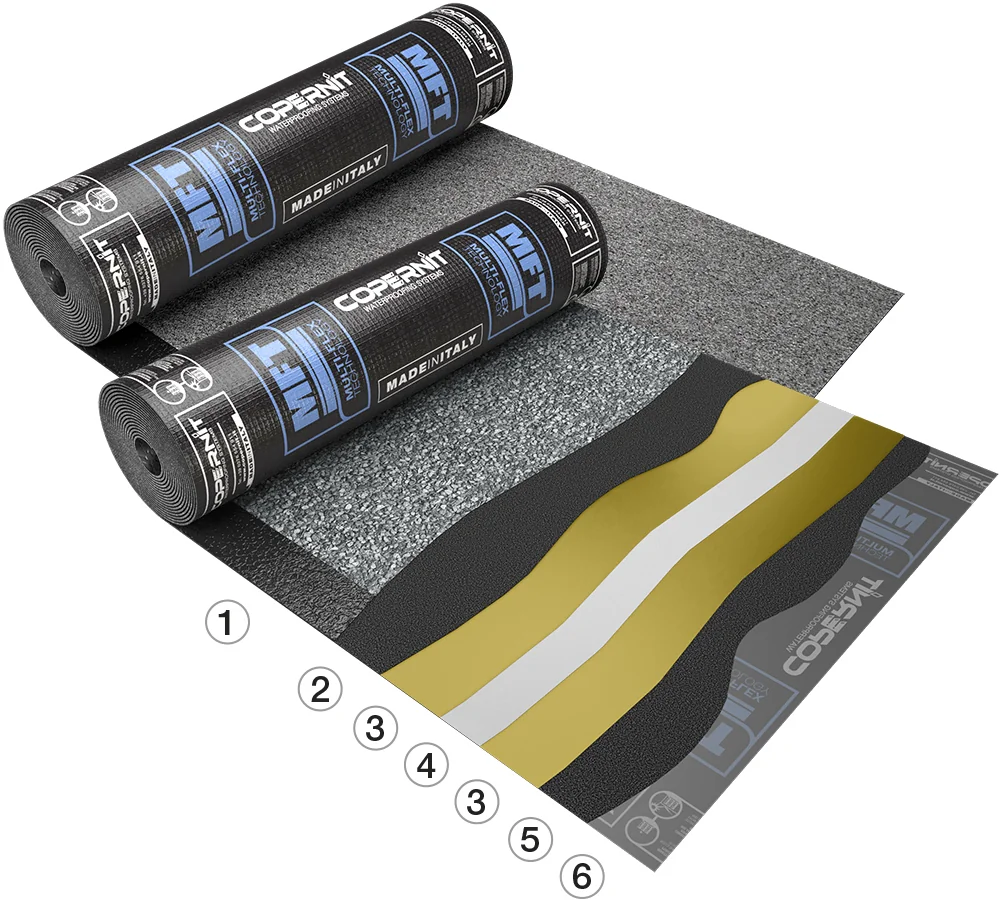
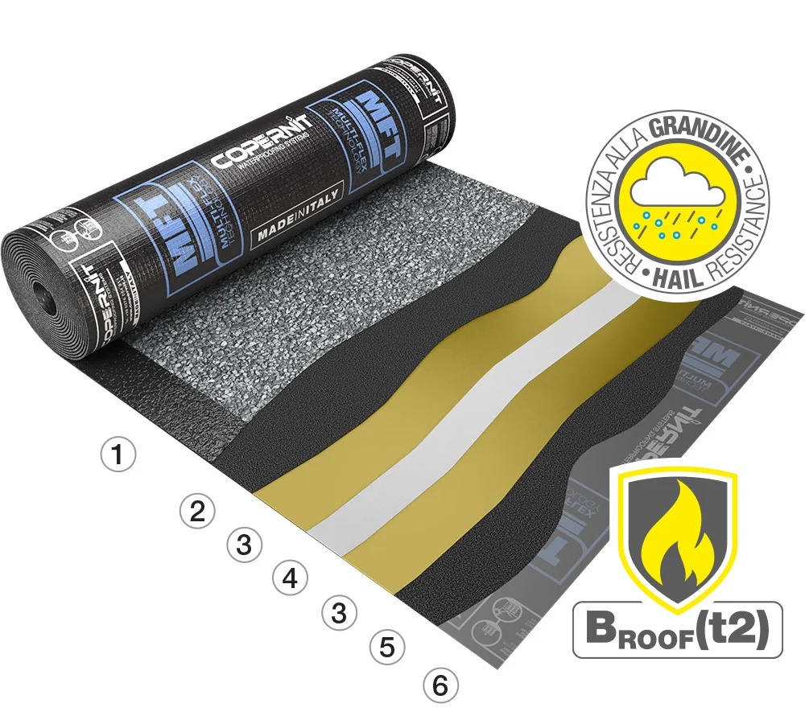

MFT Mono
APAO -20 °C / SBS -20 °C · Poliestere filo continuo stabilizzato
Membrana multistrato che combina mescola APAO in superficie (resistenza a caldo e raggi UV) e mescola SBS sul lato inferiore (flessibilità a freddo e adesività in posa).
MFT Pro
APAO -15 °C / SBS -25 °C · Poliestere filo continuo stabilizzato
Stessa tecnologia a tripla mescola di MFT Mono, con prestazioni superiori sul lato SBS: maggiore flessibilità a freddo e forte adesività, indicata per il rifacimento di vecchi manti deteriorati.

MFT Pro 25
APAO -15 °C / SBS -25 °C · Poliestere filo continuo stabilizzato
Membrana Mineral con tripla mescola APAO/SBS, pensata per un'elevata resistenza alla grandine: supera il test EN 13583 (laboratorio SKZ-Testing, Germania) resistendo a chicchi a 180 km/h.

MFT Pro 25 B-Fire
APAO -15 °C / SBS -25 °C · Bᵣᵒᵒf(t2)
Variante di MFT Pro 25 con le stesse caratteristiche antigrandine, più la certificazione di resistenza al fuoco esterno Bᵣᵒᵒf(t2) (EN 13501-5). Adatta anche a coperture con impianti fotovoltaici.